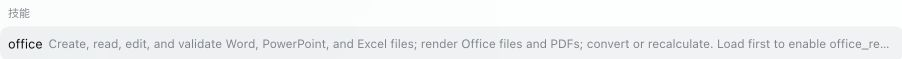

0.2.3-ALPHA.1 · 文件
03 / 11
Office 技能从四个入口合为一个
以前
/office 负责按任务分流。也可以用 /office-docx、/office-pptx 或 /office-xlsx 直接加载对应格式的指引。
现在
三个格式的指引合进 /office。例如，输入「/office 把 A1 改成 42」。

斜杠命令先把技能说明交给模型。渲染、格式转换和公式重算工具从模型的下一步开始可用。
0.2.3-ALPHA.1 · 文件
03 / 11
/office 负责按任务分流。也可以用 /office-docx、/office-pptx 或 /office-xlsx 直接加载对应格式的指引。
三个格式的指引合进 /office。例如，输入「/office 把 A1 改成 42」。

斜杠命令先把技能说明交给模型。渲染、格式转换和公式重算工具从模型的下一步开始可用。